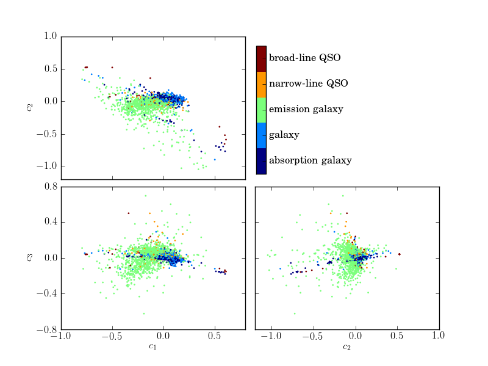

PCA Projection of SDSS Spectra¶
Plot the PCA eigencomponents from 4000 SDSS spectra.

# Author: Jake VanderPlas <vanderplas@astro.washington.edu>
# License: BSD
# The figure produced by this code is published in the textbook
# "Statistics, Data Mining, and Machine Learning in Astronomy" (2013)
# For more information, see http://astroML.github.com
import numpy as np
from matplotlib import pyplot as plt
from astroML.datasets import fetch_sdss_corrected_spectra
from astroML.plotting.tools import discretize_cmap
#------------------------------------------------------------
# Fetch the data; coefficients have been pre-computed
data = fetch_sdss_corrected_spectra()
coeffs = data['coeffs']
c = data['lineindex_cln']
#------------------------------------------------------------
# Set up color-map properties
clim = (1.5, 6.5)
cmap = discretize_cmap(plt.cm.jet, 5)
cdict = ['unknown', 'star', 'absorption galaxy',
'galaxy', 'emission galaxy',
'narrow-line QSO', 'broad-line QSO']
cticks = [2, 3, 4, 5, 6]
formatter = plt.FuncFormatter(lambda t, *args: cdict[int(np.round(t))])
#------------------------------------------------------------
# Plot the results
fig = plt.figure()
fig.subplots_adjust(hspace=0.05, wspace=0.05)
# axes for colorbar
cax = plt.axes([0.525, 0.525, 0.02, 0.35])
# Create scatter-plots
scatter_kwargs = dict(s=4, linewidths=0, edgecolors='none', c=c, cmap=cmap)
ax1 = plt.subplot(221)
im1 = ax1.scatter(coeffs[:, 0], coeffs[:, 1], **scatter_kwargs)
im1.set_clim(clim)
ax1.set_ylabel('$c_2$')
ax2 = plt.subplot(223)
im2 = ax2.scatter(coeffs[:, 0], coeffs[:, 2], **scatter_kwargs)
im2.set_clim(clim)
ax2.set_xlabel('$c_1$')
ax2.set_ylabel('$c_3$')
ax3 = plt.subplot(224)
im3 = ax3.scatter(coeffs[:, 1], coeffs[:, 2], **scatter_kwargs)
im3.set_clim(clim)
ax3.set_xlabel('$c_2$')
fig.colorbar(im3, ax=ax3, cax=cax,
ticks=cticks,
format=formatter)
ax1.xaxis.set_major_formatter(plt.NullFormatter())
ax3.yaxis.set_major_formatter(plt.NullFormatter())
ax1.set_ylim(-1.2, 1.0)
ax3.set_xlim(-1.2, 1.0)
for ax in (ax1, ax2, ax3):
ax.xaxis.set_major_locator(plt.MaxNLocator(5))
ax.yaxis.set_major_locator(plt.MaxNLocator(5))
plt.show()